这种形式的数字称作“二项式系数”（binomial coefficients），把需要考虑先后次序的计数问题称作“排列”（permutations）。这些术语在使用时很容易发生混淆，例如，我们经常把“密码锁”说成“combination lock”（数字组合锁），实际上应该是“permutation lock”（数字排列锁），因为数字的先后次序非常重要。
这种形式的数字称作“二项式系数”（binomial coefficients），把需要考虑先后次序的计数问题称作“排列”（permutations）。这些术语在使用时很容易发生混淆，例如，我们经常把“密码锁”说成“combination lock”（数字组合锁），实际上应该是“permutation lock”（数字排列锁），因为数字的先后次序非常重要。接下来，我们将利用刚刚学到的计数知识，计算我们中彩票大奖和玩扑克牌游戏时拿到各种牌面的概率。但是，我先制作一些冰激凌，让大家放松放松。
假设某家商店出售10种口味的冰激凌，可以搭配出多少种三球冰激凌呢？在做圆筒冰激凌时，各种口味的先后次序是需要考虑的（当然如此!）。如果各种口味都允许重复，那么每个冰激凌都有10个选择，共可以做出103 = 1 000种圆筒冰激凌。如果我们要求每个冰激凌有3种不同口味，那么圆筒冰激凌的种类为10×9×8 = 720种，如下图所示。
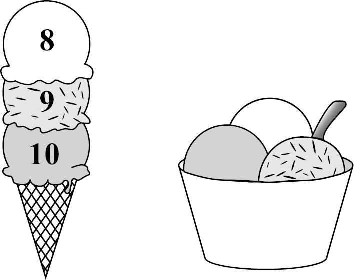
但是，我们真正需要考虑的问题是：在先后次序无关紧要的情况下，每个杯装冰激凌包含3种不同口味，共有多少种排列方式？既然先后次序不重要，种类肯定会减少。事实上，数量会减少为圆筒冰激凌的1/6。为什么会这样呢？因为每个杯装的3种不同口味的冰激凌（比如，巧克力、香草和薄荷口味），在装到圆筒里时都有3! = 6种排列方式。也就是说，圆筒冰激凌的种类是杯装冰激凌的6倍。所以，杯装冰激凌的数量是：
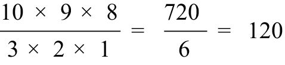
10×9×8的另一种写法是10! / 7!（尽管第一种写法更便于计算）。因此，杯装冰激凌的种类数可以写成
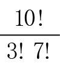
。我们把这个表达式称为“10选3”，记作 ，它的值是120。一般而言，从n个不同对象中选择k个，并且不考虑先后次序的活动被称为“n选k”，公式为：
，它的值是120。一般而言，从n个不同对象中选择k个，并且不考虑先后次序的活动被称为“n选k”，公式为：
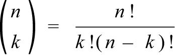
数学界把这类计数问题称作“组合”（combinations），把 这种形式的数字称作“二项式系数”（binomial coefficients），把需要考虑先后次序的计数问题称作“排列”（permutations）。这些术语在使用时很容易发生混淆，例如，我们经常把“密码锁”说成“combination lock”（数字组合锁），实际上应该是“permutation lock”（数字排列锁），因为数字的先后次序非常重要。
如果冰激凌店出售20种口味的冰激凌，你希望在一个圆筒中装5种不同口味的冰激凌（次序不重要），那么各种组合的数量为：
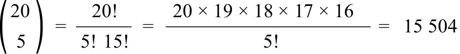
顺便告诉大家，如果你们的计算器没有专门计算
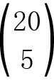
的按钮，也可以使用互联网，在搜索引擎中输入“20选5”，就可能会找到答案。二项式系数有时会出现在似乎需要考虑先后次序的问题之中。如果我们抛10次硬币，硬币正反面的排列方式（例如，正反正反反正正反反反，正正正正正正正正正正）有多少种呢？由于每次抛掷都有两个可能的结果，因此根据乘法法则，一共有210 = 1 024个可能的排列，而且每种结果的发生概率都是相同的。（第一次听到这个结论时，有些人会感到吃惊，因为他们认为得到例子中给出的第二种结果的概率小于第一个。但实际上，得到这两个结果的概率都是
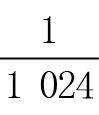
。）不过，抛10次硬币，得到4个正面的概率大于10个正面，这是因为只有一种情况可以得到10个正面，这种情况发生的概率是。那么，抛10次得到4个正面的情况有多少种呢？这样的排列要求10次中有4次是正面朝上，其他6次都是反面朝上。从10次中选取4次，共有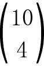
= 210种排列方式。（与从10种口味中选择4种不同口味冰激凌的情况相似。）因此，抛掷10次硬币，在公平公正的情况下，正好得到4个正面的概率是：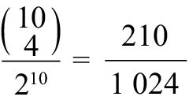
≈20%我们自然而然地就会想到一个问题：从10种口味的冰激凌中挖3个球，可以重复选择同一口味，一共可以制成多少种圆筒冰激凌？（103 / 6显然不是正确答案，因为它连整数都不是！）直接的解法是：根据每个圆筒中有几种口味的冰激凌，分三种情况考虑。如果只有1种口味，自然只有10种可能。如果有3种口味，根据前面的讨论，我们知道共有 = 120种可能。如果有2种口味，我们知道有
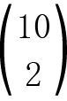
种选取办法，然后还要考虑哪种口味挖2个球，因此共有2× = 90种可能。把这三种情况汇总起来，共可以制作出10 + 120 + 90 = 220种圆筒冰激凌。还有一种解法，无须分成三种情况，也可以得到正确答案。所有的圆筒冰激凌都可以表示成3个星号和9条竖线的形式。例如，选择第1、2、2种口味的冰激凌可以表示成下面这种星号—竖线排列：
选择第2、2、7种口味时，上述排列就会变成：
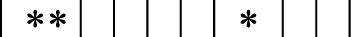
下面这种排列
则表示圆筒中有第3、5、10种口味的冰激凌。3个星号与9条竖线的所有排列均对应不同的圆筒冰激凌。这些符号一共占据12个位置，其中3个位置上是星号。因此，星号与竖线的排列一共有
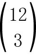
= 220种。推而广之，从n个对象中选取k个对象，不考虑先后次序，而且可以重复选取，可选方案的数量就是k个星号与n – 1条竖线构成的排列，也就是说，有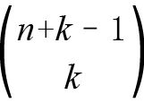
种选择方案。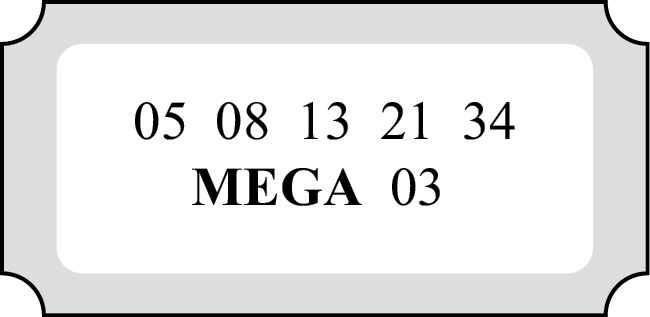
很多涉及概率问题的游戏都与组合有关。例如，在购买如上图所示的加州彩票时，你需要从1~47中选择5个不同的号码，此外，还需要在1~27中选择一个MEGA号码（该号码也可以是你选择的另外5个号码中的一个）。因此，MEGA号码共有27种选择，另外5个号码共有
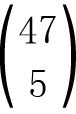
种选择。那么，加州彩票的号码组合共有：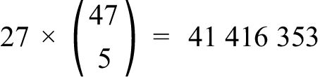
因此，你赢得大奖的概率小于4 000万分之一。
接下来，我们来研究扑克牌游戏的奥秘。通常，具有代表性的“一手牌”是从一副52张扑克牌（不含大小王）中选取5张构成的。因此，一手牌的组合方案数量是：
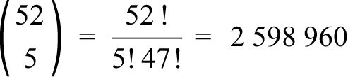
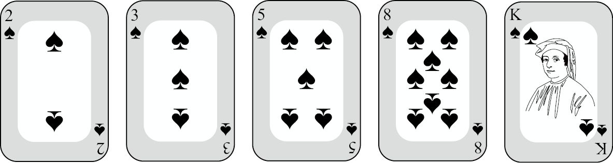
在扑克牌游戏中，像上图这种花色相同的5张牌被称为“同花”。同花一共有多少种组合呢？要构成一手同花牌，首先要选择一个花色，有4种可能。（我心中的第一选择是黑桃。）从这套花色的牌中选择5张牌，共有多少种组合呢？一副牌中共有13张黑桃，从中选择5张，就有
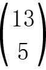
种方案。因此，同花的数量是：4× = 5 148
也就是说，拿到一手同花牌的概率是5 148/2 598 960，大约为1 / 500。如果你是一名严谨的扑克牌游戏玩家，你还需要从5 148中减去4×10 = 40，因为5张牌顺连时就会变成“同花顺”。
扑克牌游戏中的“顺子”是指5张顺连的牌，例如，A2345、23456…10JQKA。如下图所示：
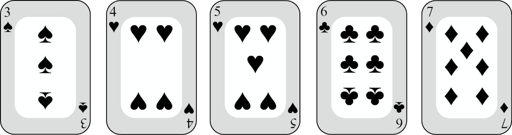
顺子一共有10个不同类型（从最小的牌开始），在选择了某个类型（例如，34567）后，这5张牌还需要分别从4种花色中做出选择。因此，顺子的数量一共是：
10×45 = 10 240
这个数字大约是同花组合数量的两倍，拿到一手顺子牌的概率大约是1 / 250。正因为拿到一手同花牌的难度高于一手顺子牌，所以同花牌在扑克牌游戏中的价值高于顺子牌。
价值更高的一手牌是“满堂红”，它指的是5张牌中有3张牌的点数相同，另外2张牌的点数相同。例如：
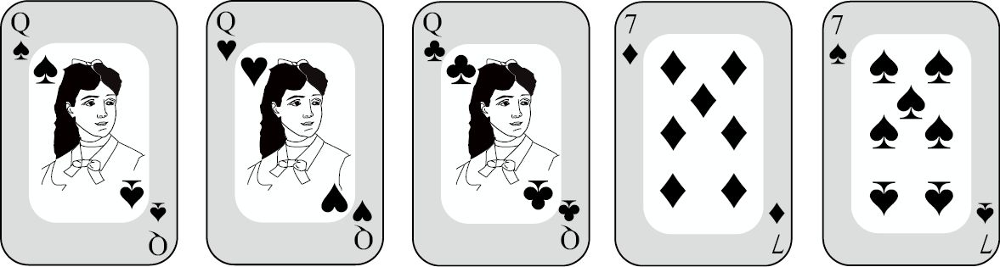
要构成满堂红的牌型，先要为3张牌选择点数（13种方案），然后为另外2张牌选择其他点数（12种方案）。（假设我们选择了3个Q，2个7。）接下来，我们还需要为它们分配花色。选择3个Q有
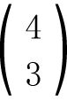
= 4种组合，选择2个7有 = 6种组合。因此，满堂红的数量是：
= 6种组合。因此，满堂红的数量是：
13×12×4×6 = 3 744
拿到一手满堂红牌的概率是3 744/2 598 960，约为1/700。
下面，我们比较一下拿到满堂红与“两对”这两种牌型的概率。两对是指有2张牌为同一点数，还有2张牌同为另一点数，剩下的那张牌的点数与其余4张都不同。例如：
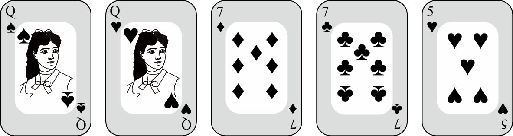
很多人以为两对的数量是13×12，但这种算法其实犯了重复统计的错误，因为先选一对Q、后选一对7，与先选一对7、后选一对Q是一样的结果。正确的算法是先算
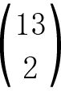
（同时选择一对Q和一对7），然后为第5张牌选择一个点数（比如5），最后为它们分配花色。因此，两对的数量是：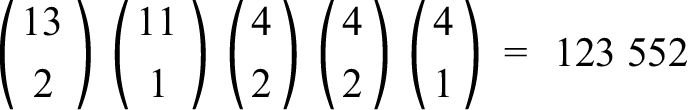
也就是说，出现这种牌型的概率约为5%。
剩下的牌型就不再一一讲解了，我只给出答案，由大家自行验证。“四条”这种牌型（例如A♠A♡A♢A♣8♢）的数量为：
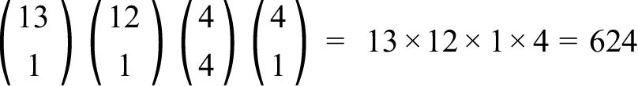
像A♠A♡A♢9♣8♢这样的牌型名叫“三条”，数量是：
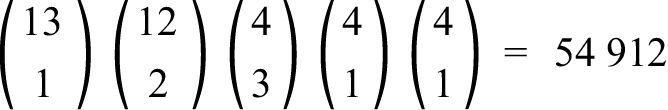
“一对”的牌型，例如A♠A♡J♢9♣8♢，数量为：
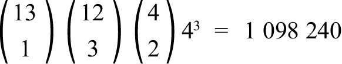
它在所有牌型中的比例约为42%。
那么，不是对子、顺子和同花的“垃圾牌”有多少种呢？你可以从
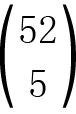
中减去上述各种情况的总和，也可以通过下述方式直接计算：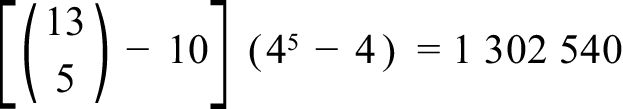
上式第一项计算的是选择任意5种不同点数（所有点数均不相同）的一手牌数量，其中不包括像34567这样的10类“顺子”牌。第二项计算的是为所选的5张牌分别赋予一种花色，每张牌有4种可选花色，但我们必须去掉5张同花的4种情况。结果表明，差于一对的牌型占50.1%，有49.9%的牌型至少不比一对差。
接下来的问题非常有意思，它有三种解法，而且其中有两种解法是正确的！这个问题是：5张牌中至少有一个A的牌型有多少种？有人可能张口就答：4×
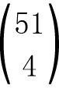
。他们认为，先选1个A，共有4种可能；然后从剩余的51张牌（包括其余的A）中随意选择4张。遗憾的是，这个答案是错误的，因为某些牌型（不只包含1个A）被统计了不止一次。例如，A♠A♡J♢9♣8♢，在先选择A♠（再选择其他4张牌）时会统计这个牌型，在先选择A♡（再选择其他4张牌）时会再次统计这个牌型。正确的解法是：根据牌型中A的个数，把这个问题分成4种情况考虑。例如，有且只有1个A的牌型有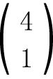
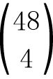
种（先选1个A，其余4张牌都不是A）。继续考虑它含2、3和4个A的情况，就可以得出至少有1个A的牌型总数：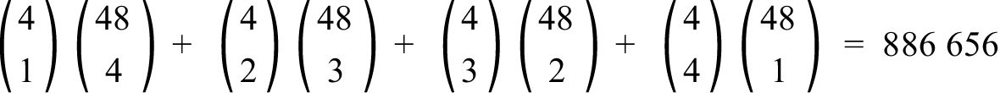
但是，如果从相反的角度来考虑，计算就会简单得多。不含有A的牌型很容易算出来，数量是
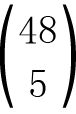
。因此，至少含有1个A的牌型数量是：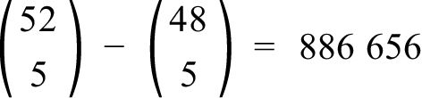
我们发现扑克牌游戏中各种牌型的价值大小取决于其概率大小。例如，由于一对比两对的出现概率高，因此一对的价值低于两对。各种牌型的价值由低至高的次序是：
一对，两对，三条，顺子，同花，满堂红，四条，同花顺
只要记住“1、2、3、顺同花，2–3、4、同花顺”（“2–3”指满堂红），就不会搞错它们的次序。
现在，假设我们的扑克牌游戏里可以这样使用那两张王牌：共有54张牌，两张王牌是百搭牌，你可以赋予它们任意点数，以便凑成价值最大的牌型。例如，如果你拿到了A♡A♢K♠8♢和王牌，可以选择把王牌当作A，这样就凑成了三条。如果你把王牌当作K，牌型就是两对，价值低于三条。
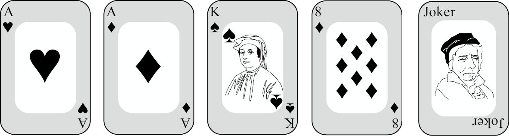
于是，有意思的问题随之而来。如果按照传统方法判断牌型的价值高低，那么在你拿到像上图这种既可被视为三条又可被视为两对的牌型时，你肯定选择三条，而不愿意选择两对。但是，这样做的结果是：被视为三条的牌型数量超过被视为两对的牌型，两对反而变成一种更少见的牌型。如果我们试图通过提高两对的牌值来解决这个问题，就会导致两对的数量超过三条，同样的问题再次出现。1996年，数学家史蒂夫·加德布斯（Steve Gadbois）发现了这个现象，并得出了一个令人吃惊的结论：如果扑克牌游戏中可以使用王牌，就不可能始终根据牌型概率来决定牌型的价值。